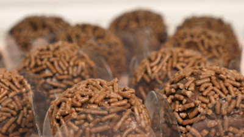

Brigadeiro

Description
Easy to make, Brazilian chocolate treat.
Prep time: 15 minutes.
Ingredients
- 1 tablespoon butter
- 14 oz sweetened condensed milk
- 1/4 cup cocoa powder
- 1 cup chocolate sprinkle, as needed
Steps
- In a pot over low heat, melt the butter, condensed milk, and cocoa powder, stirring continuously until you can see the bottom of the pot for 2-3 seconds when dragging a spatula through.
- Pour onto greased plate, then chill for 1 hour.
- Shape and roll the chilled mixtue into balls.
- Roll the balls on chocolate sprinkles
Recipe can be served on a dish or in candy cups.
Original recipe can be found here.